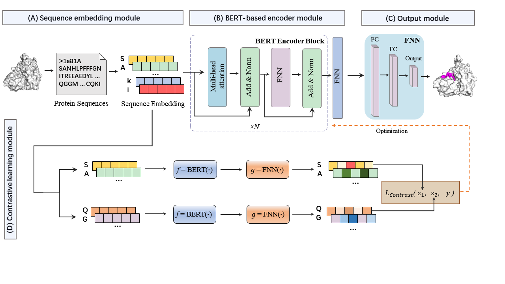

Welcome to PepBCL server
Identifying the protein-peptide binding residues is fundamentally important to understand the mechanisms of protein functions and drug discovery. To accurately predict the protein-peptide binding residues, we propose a novel BERT (Bidirectional Encoder Representation from Transformers)-based contrastive learning framework named PepBCL to predict the protein-peptide binding residues based on protein sequences only.
To facilitate the use of our method, we establish an online predictive platform as the implementation of the proposed PepBCL.

If you think PepBCL is useful, please kindly cite the following paper:
PepBCL: A novel BERT-based contrastive learning framework using sequences only to predict protein-peptide binding residues
Webserver update:
July, 28th, 2021: the first version of PepBCL server was established.
March, 28th, 2022: we update the server according to the suggestions from reviewers.
April, 13th, 2022: we update the fasta input according to the suggestions from reviewers.